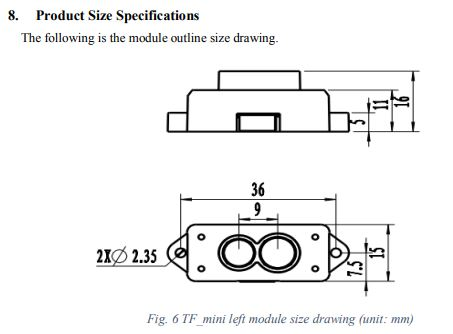
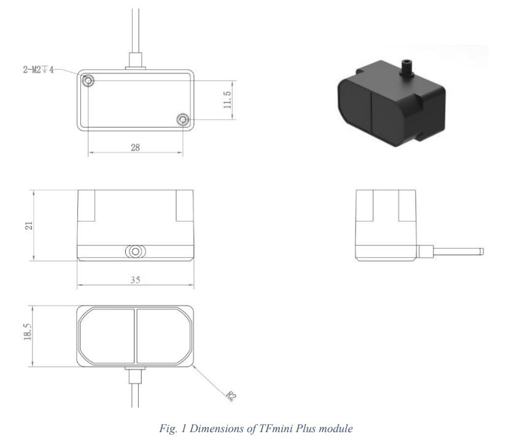
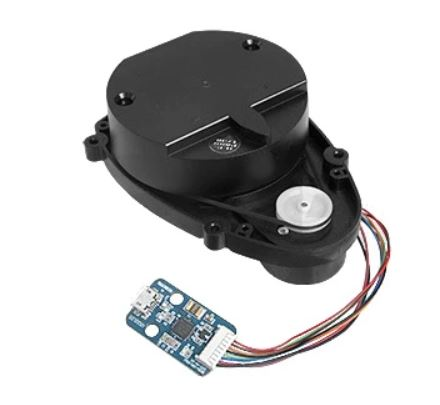

Robotique : mesure de distance¶
- Auteur:
J.Soranzo
- Date:
Novembre 2019
- Societe:
VoRoBoTics
- Entity:
VoLAB
Vocablaire¶
TOF = Time Of Flight
SLAM = Simultaneous Localization and Mapping
Lidar¶
LIDAR tournant¶
Chez DF-Robot : 99$ (prix au 2/3/20) A1-M8 DF ROBOT [1]
LIDAR tournant Home made¶
Homemade LIDAR sensor with Arduino [5] & Processing sur Youtube
Le site qui va avec la vidéo [6]
Lidar HOMEMADE Tournant à partir d’un VL53LX0, ARDUINO UNO, connecteur tournant et capteur à effet HALL
Une autre vidéo sur un lidar tournant home made
Open Simple Lidar [7] : Making map of the rooms
Hakaday.io [8] et github [9] dans les commentaires de la vidéo
Application PC développée en C# dans le code est foruni sous github ! Merci à lui.
Utilise un capteur TSL1401 assez original ! Full instruction provided !!!!
Les fixes (Plus près des TOF)¶
LIDAR lite v3HP [3] 150USD sans les frais de port 216€ chez ali - interface I2C
LIDAR-Lite V3 179€ chez Go-Tronic [4]
Range 4cm à 40m !
Spread of the beam: Distance/100 = beam diameter at that distance Environ 1/2 ° ou 8 milliradian
La série des TF de chez Benewake
TF mini : 27.33€ Banggood [10] (en promo): FOV 2.3° max 12m
{kind=link}
TF-mini plus: 41.16€ chez ali FOV 3.6° 0.1 à 12m
{kind=link}
TF-03 : 0.1 à 100m FOV 0.5° Prix 408.76€ banggood et 190€ chez Robotshop [11] …
76€
Un Lidar à 100€ [12] exemple d’utilisation très complet sur le site de ROS [13]
{kind=link}
Connu aussi sou le nom de HLS-LFCD-LDS ou encore LDS-01.
Capteur ToF¶
GY-530 VL53L0X Banggood [14] 9.27€
I2C : gros inconvénients : il faut fixer sons adresse par soft à chaque démarrage ! Si on en veut plusieurs sur le bus.
FOV de 25°C
TOF10120 [15] 10.8€+3.91€ de FdP chez aliExpresse ou 8.19€ chez Banggood ou encore 4.73€ chez CDiscount [16] FdP ?
10 à 180cm, UART et I2C
Un exemple d’utilisation sur Hackster.io [17]
void SensorRead(unsigned char addr,unsigned char* datbuf,unsigned char cnt)
{
unsigned short result=0;
// step 1: instruct sensor to read echoes
Wire.beginTransmission(82); // transmit to device #82 (0x52)
// the address specified in the datasheet is 164 (0xa4)
// but i2c adressing uses the high 7 bits so it's 82
Wire.write(byte(addr)); // sets distance data address (addr)
Wire.endTransmission(); // stop transmitting
// step 2: wait for readings to happen
delay(1); // datasheet suggests at least 30uS
// step 3: request reading from sensor
Wire.requestFrom(82, cnt); // request cnt bytes from slave device #82 (0x52)
// step 5: receive reading from sensor
if (cnt <= Wire.available()) { // if two bytes were received
*datbuf++ = Wire.read(); // receive high byte (overwrites previous reading)
*datbuf++ = Wire.read(); // receive low byte as lower 8 bits
}
}
Le composant au dos est 3AQ20 : Nuvoton 1T 8051-based Microcontroller N76E003 [18] donc en fait on ne sait pas les registres I2C mise à part cet exemple ci-dessus.
Malgrés tout mes efforts, je n’ai pas réussi à retrouver la datasheet du TOF10120 pour avoir la doc complète de l’I2C tout au plus un truc ressemblant [19] dans datasheet library :-(